layout: true <div class="my-header"><img src="images/scsdLogo.png" style="height: 70px;"/></div> --- class: schodack ##2021.04.12 AP Physics .qotd[❓ of the 📆: If you were featured on the local news, what would you most likely be on there for?] 1. [~10 Minutes] Go over your assigned workbook problem(s) and whiteboard the answer with your assigned partner 1. Tobiah & Lukas ➡️ 5.B & 5.C 2. Jace & April ➡️ 5.E 3. Sam & Amanda ➡️ 5.D 4. Landon & Joe ➡️ 5.F 5. Chris & Amanda ➡️ 5.G 2. [~5 min per board] Rotate around to other boards asking board presenter any questions you have --- class:schodack ##2021.04.01 AP Physics - Do Now In Case A, a metal bullet penetrates a wooden block. In Case B, a rubber bullet with the same initial speed and mass bounces off of an identical wooden block. .center[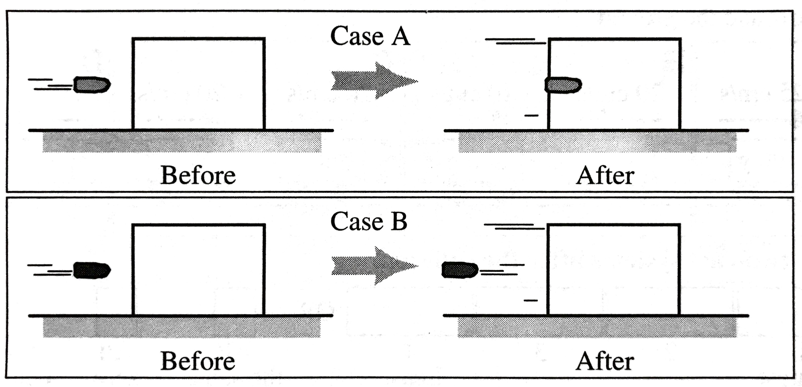] **Will the speed of the wood block be greater in Case A, greater in Case B, or the same in both cases?** Explain you reasoning. Make a momentum bar chart to support your answer. --- class:schodack ##2021.04.01 AP Physics .qotd[❓ of the 📆: What plans do you have for April Break?] 1. Do Now: 2. Impulse Demo 3. Impulse Conceptual Questions **HW Over Break** - Workbook 5.A through 5.H --- class:schodack ##2021.03.31 AP Physics .qotd[❓ of the 📆: What is one of your simple joys? (i.e. I really enjoy putting on new socks)] 1. Breakout Rooms - working with conservation of momentum (`\(p_{before}=p_{after}\)` and `\(\vec{p}=m\vec{v}\)`) 2. Present and Discuss solutions 3. Start AP Workbook? Group Links: - [Group 1](https://jamboard.google.com/d/1ZjN-AFFw0eSpq3gXId_3VnPDjwDSYcIeR8a3d73obco/viewer?f=0) - [Group 2](https://jamboard.google.com/d/1AfxeWJZ9UgAy-gD8VPi33Ez6gSO5e2QwyOZesPLNmyU/viewer) - [Group 3](https://jamboard.google.com/d/1XZlRCKIYsVYiVhjqvj9YONOHRc3VS5wSBwqmsumqedU/viewer) - [Group 4](https://jamboard.google.com/d/1LK4icbRl3xHxSiI9Oe-z7vv7LA39vGwz5QJG_2-r--A/viewer?f=0) HW: AP Workbook 5.A, 5.E, 5.F --- class: schodack ##2021.03.29 AP Physics 1. Exploring Collisions Continued...Sticky Collisions (equal and unequal mass) - Is `\(K\)` of the system conserved before and after the collision? - Is the `\(mv\)` quantity that we looked at last class conserved for the system? [Remember `\(v\)` has direction] 2. New Conservation Law & New 📊 Representation 3. Pivot: Center of mass (finish for homework) --- class:schodack ##2021.03.25 AP Physics Do Now: Write down and describe why it is difficult to predict the results of collisions with our Energy Conservation Models. Provide examples for your thinking. (You can do this on your whiteboard or in your notebook) --- ##2021.03.25 AP Physics .qotd[❓ of the 📆: ?] 1. Do Now 2. 💥 Demo 3. Exploring Collisions --- class: center, middle #💥 Silly Putty and Bowling Ball Demo Sketch a quick energy bar graph of the situation. --- #Collisions In collisions *something* is conserved, we need to figure out what that quantity is. -- We will explore 4 different situations: 1. Bouncy Collision, Equal Masses 2. Bouncy Collision Unequal Masses 3. Sticky Collision, Equal Masses 4. Sticky Collision, Unequal Masses --- #Collisions We will look at these collisions one at a time and update our model. -- What are we trying to find? -- **A physical quantity that is conserved before and after a collision** -- For each situation you will 1. Hypothesize what the conserved quantity is after **qualitative** observations -- 2. Test the situation to see if that quantity is conserved by collecting data on your carts -- 3. Continue to test until you find a conserved quantity, and then test to make sure it is **always** conserved before and after the collision -- 4. Compare with the rest of the class -- 5. Try the next situation with your findings from the previous and repeat the process --- class:schodack ##2021.03.15 AP Physics .qotd[❓ of the 📆: Would you rather live in the ocean 🌊 or on the moon🌓?] 1. Question of the day 2. FRQ Practice in Groups - Your group will complete 2/3 problems and present 1 of them - The problem that you do not present you will critique and question HW: - Test tomorrow --- class:schodack ##2021.03.15 AP Physics .qotd[❓ of the 📆: What is the last goal you achieved?] 1. Do Now - Roll Up Challenge 2. POWER HW: - Study for test --- class:schodack ##2021.03.11 AP Physics 1. Quiz 2. Porter Packet - Whiteboarding in Pairs 4.7 AP FRQs HW: - Assorted Workbook (4.J, 4.M, 4.O) - AP Classroom Review --- class: schodack ##2021.03.08 AP Physics - Do Now ###4.3 Tic Tac Bounce Complete the Exercise in your packet (use the provided tic tac) **On you whiteboard** Claim-Evidence Reasoning: What does your tic tac have a high bounce following a low bounce? --- ##2021.03.08 AP Physics 1. Do Now 2. Mini Lab: Pop up toy 3. Workbook 4.E HW: - AP Workbook: Finish 4.E?, 4.F, 4.G - Energy Quiz (with calculations) Thursday --- class: schodack ##2021.03.04 AP Physics .qotd[❓ of the 📆: What takes a lot of time but is totally worth it?(Yes repeat, but I didn't hear any answers...)] 1. ⏰ 30 Minutes - Quiz 2. Solving Energy Problems (Porter Packet 4.5, page 117) HW: - 4.B - Choosing Systems - 4.C - Energy Graphs - 4.D - Spring Potential Energy - 4.F - Energy Transformations --- class:schodack ##2021.03.03 AP Physics - Do Now Look over your energy bar graphs and ⭐ any that you have questions on. --- class:schodack ##2021.03.03 .qotd[❓ of the 📆: What takes a lot of time but is totally worth it?] 1. Do Now 2. Breakout Rooms - Discuss Bar Graph 📊 Questions - Compare answers & watch solution video if needed - Complete CER Questions (4.4 page 115 and 116...yes skip 114) 3. Using Energy to Problem-Solve HW: - Quiz Tomorrow (Energy Bar Graphs and Something with Circular Motion) - 4.B - Choosing Systems - 4.C - Energy Graphs --- class:schodack ##2021.03.01 AP Physics .qotd[❓ of the 📆: What is the theme song for the movie about your life?] 1. Energy Flavors 🥔🍟🍝🍲 [Link](https://mrporterphysics.github.io/Presentations/APETM/talks/APETM.html#17) 2. Energy Bar Graphs 📊 3. Tic Tac Bounce HW: - Finish Energy Bar Graphs - 4.B - Choosing Systems - 4.C - Energy Graphs - 4.D - Spring Potential Energy --- class:schodack ##2021.02.25 - Do Now .small[A 10-kg box initially at rest is pushed a distance of 8 m along a smooth horizontal floor. A graph of the applied horizontal force on the block as a function of displacement is shown below. ] .center[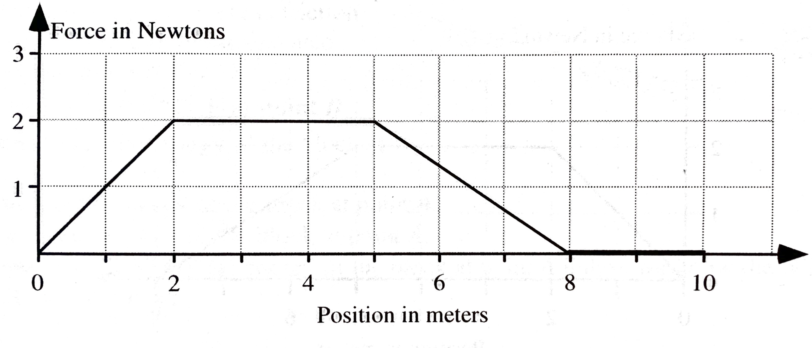] .small[**Rank the work done during each 2-meter interval indicated below** (A.) 0 to 2 m (B.) 2 to 4 m (C.) 4 to 6 m (D.) 6 to 8 m (E.) 8 to 10 m. OR, The work done on the box during each interval is the same but not zero OR, The work done on the box during each of the intervals is zero OR, We cannot determine the ranking of the work done during the intervals] --- class:schodack #2021.02.25 Do Now 🥈 .small[The figures below show systems consisting of a block attached to a spring. Each block is resting on a frictionless surface. In each case, a student pulls on the block and streches the spring to the right by the distance given in the figure. The mass of the block and force constant of the spring are also given for each case. ] .center[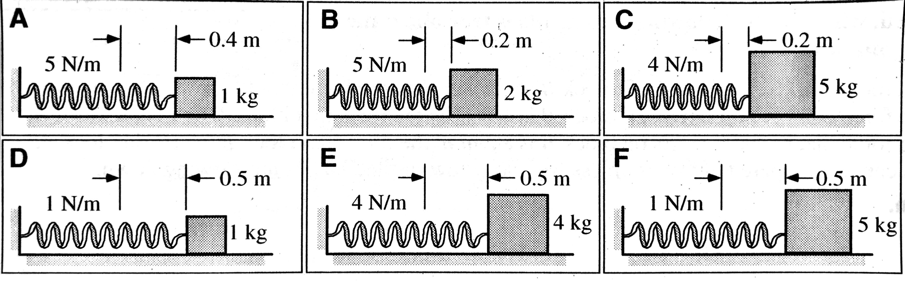] .small[**Rank these systems on the basis of the work done on the block-spring systems by the student.** OR, The work done on the systems to stretch the springs is the same but not zero for the systems. OR, The work done on the systems to stretch the springs is zero for these systems. OR, We cannot determine the ranking for the work done on the systems to stretch the springs.] --- class:schodack #2021.02.25 AP Physics 1. Do Nows 2. Work - Defining - Workbook 4.A 3. Energy 🥧 [Situations](https://mrporterphysics.github.io/Presentations/APETM/talks/APETM.html#11) 4. Energy Flavors 🥔🍟🍝🍲 [Link](https://mrporterphysics.github.io/Presentations/APETM/talks/APETM.html#17) 4. Energy 📊 --- ##2021.02.22 .qotd[What would your superpower be and why? 🦸♂️] 1. Do Now - 2. [Bring the Energy](https://mrporterphysics.github.io/Presentations/APETM/talks/APETM.html#1) 2. Hoop Spring Launcher 3. Definitions --- ####2021.02.10 AP Physics - Do Now .left-column[.center[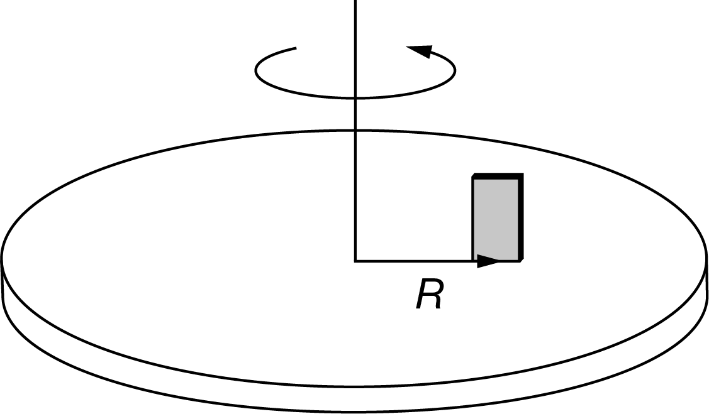]] .right-column[.center[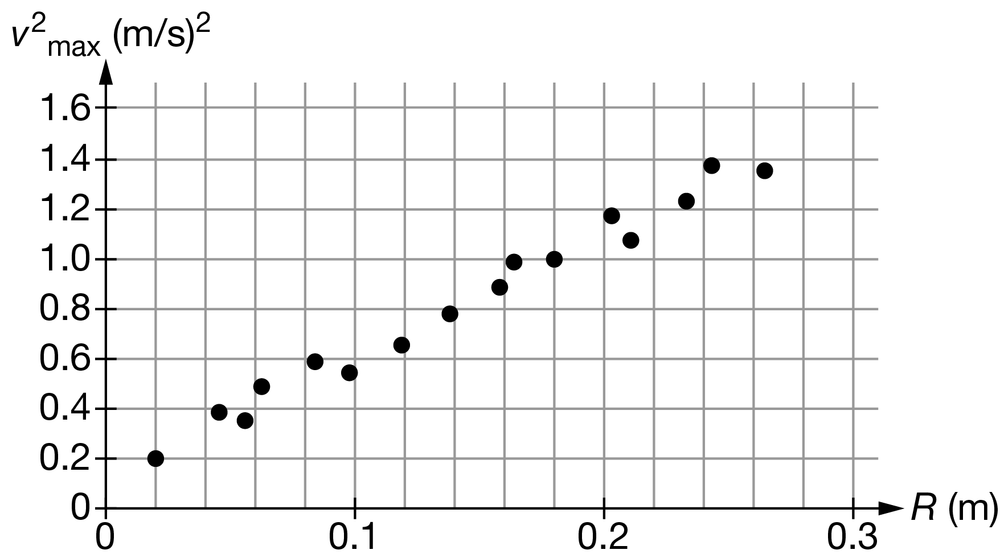]] .small[During an experiment, a block of mass `\(M\)` = 0.20 kg is placed on a disk that rotates about an axle through its center, as shown in the diagram. The block is moved to different distances `\(R\)` from the axle, and the tangential speed of the block is gradually increased until the mass begins to slip. The distance and maximum tangential speed before slipping, `\(v_{max}\)` , are recorded. A student creates a graph of `\(v_{max}^2\)` as a function of `\(R\)`, as shown. How should the student use the graph to most accurately determine the experimental value of the coefficient of static friction `\(μ_S\)` between the block and the disk? A. Determine the slope of the best fit line, and it will be equal to `\(\mu_s\)` B. Determine the slope of the best fit line, and set it equal to `\(\mu_s g\)` C. Determine the maximum value on the curve and use the data from that point in the equation `\(v^2 = \mu_s gR\)` D. Determine the midpoint value on the curve and use the data from that point in the equation `\(v^2 = \mu_s gR\)` ] --- ##2021.02.10 AP Physics .qotd[❓ of the 📆: Did you have to shovel yesterday?] 1. Do Now 2. Circular Motion - Universsal Law of Gravitation [Slides](https://mrporterphysics.github.io/Presentations/Circular%20Motion/talks/CircMotion.html#29) 3. Solving AP Problem in Breakout Rooms HW: - Study for Quiz tomorrow on Circ Motion - Test Corrections --- class: schodack ##2021.02.08 AP Physics - Do Now A roller coaster approaches the first loop de loop. Draw a free-body diagram of one of the coaster cars when it is at the top of the first loop. Starting with Newton’s second law, derive an expression for the minimum speed of the car without it losing contact with the track. When the car was on top of the hill, the same expression was derived for the maximum speed. In a few short sentences, explain how the same expression can represent both the minimum and maximum speed. --- class:schodack ##2021.02.08 AP Physics 1. Do Now 2. Test Corrections - Corrected PDF in the comments of Canvas Assignment 1. Fix the mistake - solve the problem correctly. SHOW ALL WORK 1. Determine your type of mistake: - Conceptual, Calculation, Clueless, or Careless? 1. For each problem you got wrong: What did you learn from this mistake? - I.e. the concept, to be careful with signs, to read the directions, etc 3. Flying 🐖, 🐄, and 🦇 lab HW: - Finish Lab - Corrections - Workbook G, H? --- class: schodack ##2021.02.04 AP Physics - Do Now A cart of mass `\(m\)` is moving with speed `\(v\)` on a smooth track when it encounters a vertical loop of radius `\(R\)`, as shown above. The cart moves along the inside of the entire loop without leaving the track. All frictional forces are negligible. Which of the following free-body diagrams shows the force or forces exerted on the cart at point `\(Q\)`? [A-D top to bottom] .left-column[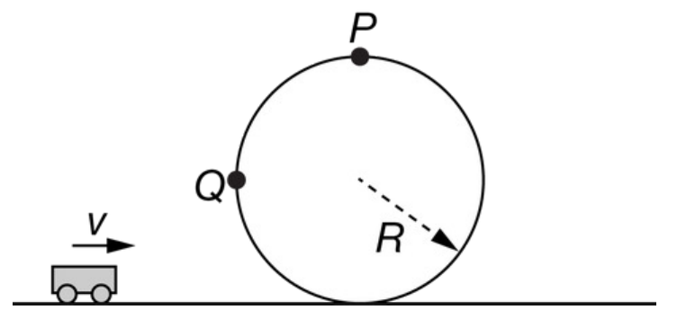] .right-column[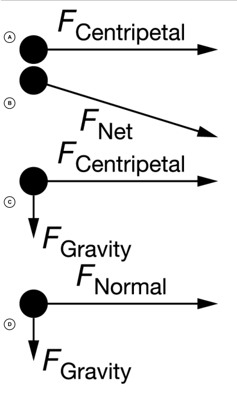] --- class:schodack ##2021.02.04 AP Physics 1. Do Now 2. "Whiteboard" HW on Jamboard - Breakout groups, go over all homework first and then whiteboard your assigned parts 3. Working through and virtual whiteboarding 3.F & 3.G HW: - AP Workbook (TBD based on how far we get in class) - Monday - 🐖 (and 🐄 and 🦇) will fly! --- class:photoback background-image:url(https://media.giphy.com/media/l41lPaVXzvGGMuAQ8/giphy.gif) ##2021.02.01 AP Physics 1. Check In - Make sure you have: a notebook, and AP Workbook 3.A-C 2. [10 Min] Workbook 2.A in breakout rooms & discuss as large group 2. [10 Min] Workbook 2.B in breakout rooms & discuss as a large group 2. Circular Motion [Slides](https://mrporterphysics.github.io/Presentations/Circular%20Motion/talks/CircMotion.html#1) 3. Workbook 2.C in breakout rooms **HW** - ▶️ AP Daily Video 3.6 and 3.7 - 🗒️ Workbook 3.D - 🗒️ Workbook 3.E --- class:schodack #2021.01.28 AP Physics <br> ##Midterm 60 Minutes - 12 Multiple Choice (answer on AP Classroom) - 2 Free Response - Can answer on paper and hand in - Questions can also be viewed in AP Classroom --- class: schodack ##2021.01.27 AP Physics - Virtual Wednesday 1. 🎶 Notes and Info: - Canvas Info - Midterm Tomorrow - On AP Classroom 2. 💯 Group Quiz - Two Questions: (1) Design Challenge, (2) Pivot Video Solution - Submit collaboartive Document of Group's choice - Jamboard, Google Slides, Google Doc, other (if you have a better suggestion) - You should be able to submit as a group on Canvas 🤞🏻 (but I haven't tried this yet...) Groups: 1. **Jace**, Tobiah, Becka, April 2. **Amanda**, Sam, Chris, Lukas 3. **Joe**, Landon, Jack --- class: schodack ##Do Now Determine the acceleration of `\(m_1\)`. Note `\(m_1 = 776.2\)` grams and `\(m_2 = 100\)` grams. You can safely assume friction is negligible. [Solve on a whiteboard] .center[<img src="http://spiff.rit.edu/classes/phys216/workshops/w4c/level_atwood/cart_and_weight.gif" width = "400 px"/>] --- class:schodack #2020.01.25 AP Physics .qotd[❓ of the 📆: What is your funniest family vacation moment?] 1. Do Now 2. Predictions & results of do now - How do your predictions compare? - How does the tension compare before and after? 3. Review Workbook 2.K - Accelerating Systems 4. Old AP FRQ --- class: schodack ##Do Now Pivot Part 2: (question 1 in pivot, take a photo 📷 of your whiteboard of the following...) Show how you can use the acceleration to determine the coefficient of friction using the acceleration you found in the previous section. Include: - a force diagram of the object as it slides - a Newton's second law statement for your force diagram - the final equation you'll use to determine the coefficient of friction. --- class:schodack ##2020.01.21 AP Physics .qotd[❓ of the 📆: Whats your favorite thing that you have checked ✔ off your bucket list?] 1. Do Now - Pivot & Friction 1. Quiz 2. Finish Pivot - kinetic friction lab 3. Review AP Workbook Problems (time dependent) --- class:schodack In both cases below, a moving 50 N box has a force of 40 N that makes an angle of 30 degrees with the horizontal. The coefficient of static friction between the box and the rough surface is 0.6 and the coefficient of kinetic friction is 0.4 .center[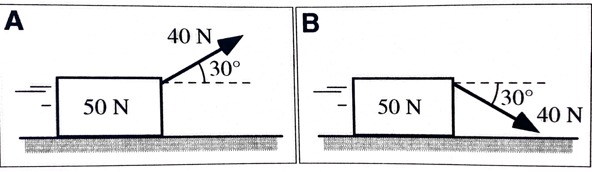] Will the frictional force exerted on the box by the rough surface in Case A be greater than, less than, or equal to the frictional force on the box by the rough surface in Case B? Explain. --- class: schodack #2020.11.14 AP Physics 1. Do Now 2. Kinetic Friction Pivot Analysis - Do on whiteboard (so you can take photo 📸 and upload) 3. Workbook 2.I - Stopping Distance 4. Review/Go Over old workbooks Note: - Solution videos have been posted for 2.L, 2.O, and your most recent quizzes. They are embedded into the Canvas Assignment. HW: - Workbook 2.I, 2.J, 2.K - Quiz Next Class (Thursday 1/21) --- class: schodack ##2020.11.13 AP Physics 1. Hellos 2. Breakout rooms - discuss lab results 3. Static Friction vs. Kinetic Friction 4. Kinetic Friction Pivot HW: - Workbook 2.I Stopping Distance - Finish Pivot we start in class --- #Breakout Rooms and "Whiteboarding" In your breakout rooms... - Compare your lab results (screen share or describe your graph) - Come to a consensus on the relationship between Normal force and friction - Discuss the meaning on the slope of the graph (if it isn't linear, linearize) - Discuss the meaning of the intercept (or if it is negligible) - Add a summary of your results the the shared Jamboard - Elect a speaker for your slide --- #Friction -- .center[$$F_f \leq \mu F_N$$] -- - Why `\(\leq\)`? -- - Static - stationary (keeps object motionless) -- - Kinetic - if the object is sliding (equation turns into equal) -- Common Coefficients of Friction: .center[<img src="https://www.aplusphysics.com/courses/regents/dynamics/images/CoeffFriction.gif" width = "300px"/>] --- ##Kinetic Friction Lab - Record video of object sliding on a level surface - 📹 Camera should be perpendicular to the motion - Include something of known size in the video for scaling puproses - Easiest way to upload to Pivot is directly from your phone (sign into Pivot on your browswer and upload from your camera roll) -- 🥅 Is to determine the coefficient of kinetic friction between your object and the surface it slides against 🎉 Fun Ideas: - Risky business slide - Something pet 🐕🐈 related (but don't torture your animals) - Ice cube 🧊 across a countertop --- class: schodack ##2020.01.11 AP Physics .qotd[❓ of the 📆: You have to sing karaoke, what song do you pick? 🎙🎵] 1. Do Now: Start AP Workbook 2.D 2. Discuss 2.D 3. Friction "Lab" Simulation HW: - 2.E, 2.F - AP Classroom Review --- class: schodack ##2020.01.07 AP Physics .qotd[❓ of the 📆: How did you get that scar of yours?] 1. Do Now: Whiteboard 2.G (Exclude Part F) - Compare with a neighbor and make a collaboartive Whiteboard - Please try to stay socially distant 2. Go Over 2.G 1. Quiz - Complete, Upload to Canvas (scan), and submit hard copy 2. AP Workbook 2.D - Whiteboard & Discuss 3. AP Workbook 2.E - Whiteboard & Discuss HW: - Workbook 2.L, 2.O - Short Pivot (Describing Forces in a collision) - AP Classroom MC Questions --- class: schodack ##AP Physics - Do Now: The figures below show systems containing a block initially held at rest on a frictionless surface. In each system, the block is attached to the end of a spring, which is compressed to the right. The mass and spring constant are given for each system, as well as the distance the spring is initially stretched. When the mass is released, the spring will accelerate the block. .center[<img src="../20192020/images/Springrank.jpg" width = "700 px"/>] **Rank these systems on the basis of the magnitude of the initial acceleration of the blocks. *Explain your reasoning.*** --- class:schodack ##2021.01.04 AP Physics .qotd[❓ of the 📆: What’s the longest trip you’ve been on?] 1. Do Now 2. N2L Review 3. Elevator Problems 4. Practice with N2L HW: - AP Workbook 2.C, 2.G - Pivot: Collisions - Quiz Thursday - Drawing FBDs, Explaining Forces, and a simple N2L Question --- ##Do Now Split your whiteboard in half: 1. If you did not make your measurements in meters and kilograms, convert those numbers now 2. On one side whiteboard sketch the results of your first experiment include: - Graph - Mathematical Model (Equation) - List of any controls 2. On the other side whiteboard sketch the results of your second experiment include: - Graph - Mathematical Model (Equation) - List of any controls --- class: schodack ##2020.12.21 AP Physics .qotd[❓ of the 📆: Which list are you on? 🎅🏻] 1. Do Now 2. Board Meeting on Pivot 3. Applying our new findings Homework: NONE!!! --- class: schodack #Pivot Analysis: 1. Describe Motion of the Glider - Why is this important? 2. Describing the forces on the cart 3. Experimental Design 4. Force and Acceleration 5. Mass and Acceleration 6. Putting it all together --- #Newton's Second Law: #$$\vec{a} = \frac{\Sigma \vec{F}}{m}$$ -- Or... #$$\Sigma \vec{F} = m\vec{a}$$ --- class:center, middle, schodack ##AP Workbook 2.C Page 1 --- class: schodack #Applying N2L Pivot - [Testing Newton's Second Law using the Turbine Glider](https://app.pivotinteractives.com/assignments/5fe0948cf8ca9c001e008d1b/responses) --- class: schodack ##Do Now The figures below show systems containing a block initially held at rest on a frictionless surface. In each system, the block is attached to the end of a spring, which is stretched to the right. The mass and spring constant are given for each system, as well as the distance the spring is initially stretched. When the mass is released, the spring will accelerate the block. .center[<img src="../20192020/images/Springrank.jpg" width = "700 px"/>] **Rank these systems based on the magnitude of the spring force applied on the blocks from greatest to least.** --- class: schodack ##AP Physics 2020.12.14 .qotd[❓ of the 📆: What is your favorite cookie 🍪?] 1. Do Now 2. Pivot? 3. Solving Force Problems 4. Intro to Lab for Homework (Maybe...thanks Google) HW: - *For Thursday* Pivot: Exploring the Cause of Acceleration - Flipped Lab Version - *For Monday* AP Workbook 2.A and 2.B --- class: schodack ##Do Now The following data was collecting using a spring scale. Was this experiment performed on Earth? Support your answer in claim-evidence-reasoning format. .center[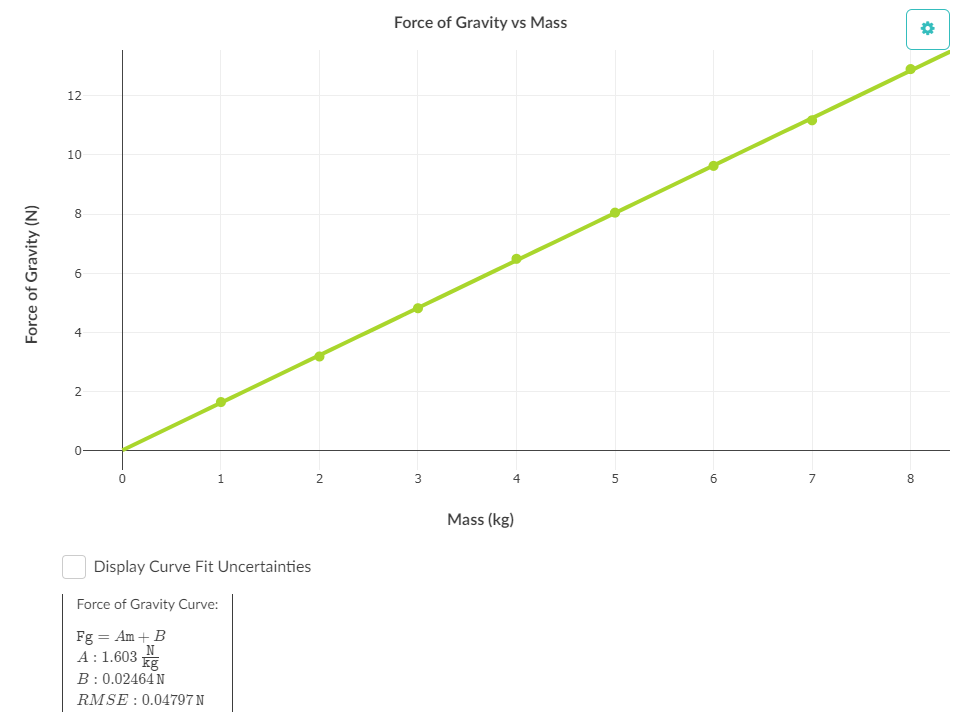] --- class: schodack ##2020.12.10 AP Physics .qotd[❓ of the 📆: What is your favorite or least favorite holiday tradition?] 1. Do Now 2. `\(\vec{F}_g\)` Lab discussion and results 3. Forces on inclined planes **HW** - Porter Packet page 70-72 --- class: schodack #Do Now: ## Which of these does not belong? .center[(1) <img src="images/wodb1.png" width = "400 px"> (2) <img src="images/wodb2.png" width = "400 px">] Come up with **two** answers for each photo (1) and (2). Explain your reasoning for each selection. --- class:schodack #2020.12.07 .qotd[❓ of the 📆: How often do you dance 💃🏻🕺🏻?] 1. Do Now 2. Card Sort ➡ Find in Canvas: Dynamics Class 3 3. Free Body Diagram Practice 4. Exit Slip HW: - Wednesday ➡ Video on Vector Addition - Practice Free Body Diagrams ➡ Quiz Thursday (real short quiz) - Pivots: Spring Force & Gravitational Force --- class:schodack #2020.12.03 AP Physics .qotd[❓ of the 📆: What was your childhood dream job? Is it still your dream job?] 1. Do Now ➡ Review your answers to Tug-of-War situations: - Make an argument (claim-evidence-reasoning) for how forces/combinations of force lead to: + Constant Velocity + Acceleration 2. Tug-of-war situations: - Whiteboard assigned problem and be prepared to share 3. Interactions 4. Interaction "Stations" Desmos **HW**: - 👀 Watch Force Types and Force Diagram Videos --- class:schodack ##Tug-of-War Simulation [Link](https://phet.colorado.edu/sims/html/forces-and-motion-basics/latest/forces-and-motion-basics_en.html?screens=1) Note: check all 3 boxes in the top right True/False: Determine whether each of the following statements are true. Support your claims with evidence and examples. (Remember that you can add/remove people while the cart is moving.) 1. A person's location on the rope matters. 2. Different combinations of people can produce the same sum of forces. 3. The sum of the forces on the cart is always equal to the addition of the individual forces. 4. It is impossible for the cart to accelerate to the left if there are people pulling it to the right. 5. The side with the bigger person will always win. 6. The side with more people will always win. 7. It is impossible to make the cart decrease in speed. 8. It is impossible to make the cart move at a steady speed. 9. The cart will always move in the direction of the sum of the forces. 10. If the sum of the forces is zero, the cart must be at rest. --- class: schodack ##Contact Interactions Interaction between two objects that results in **compression**, **tension** or **shearing**. -- **Compression** ➡ Squishing a material together -- **Extension** ➡ Stretching a material -- **Shearing** ➡ Pulling surfaces parallel to each other --- class: schodack ##Interaction "Stations" [Desmos Activity](https://student.desmos.com/join/hb3jrr) --- class:schodack ##Do Now (on Whiteboard): Describe the motion in as many ways as possible (graphs, diagrams, equations, verbal descriptions, etc) .center[<video preload="auto" width="80%" height="auto" data-setup="{}" loop controls><source src="videos/gliders.mp4" type="video/mp4" /></video>] --- class:schodack ##Do Now -- Part 2 How does this motion occur? What creates this motion? .center[<video preload="auto" width="80%" height="auto" data-setup="{}" loop controls><source src="videos/gliders.mp4" type="video/mp4" /></video>] --- class:schodack ##2020.11.30 .qotd[❓ of the 📆: What show did you binge on over Thanksgiving 📺?] 1. Do Now 2. Bowling Ball Motion 3. Interactions & Interaction "Stations" [Link](https://student.desmos.com/join/hb3jrr) 4. Tug-of-War Simulation [Link](https://phet.colorado.edu/sims/html/forces-and-motion-basics/latest/forces-and-motion-basics_en.html?screens=1) HW (All Posted in Canvas): - Porter Videos ➡ Defining Forces & Force Diagrams - N1L Video Vignette --- class:schodack ##Bowling Ball Physics 🎳 🤔 I have a flimsy meterstick and a bowling ball -- describe how I can accelerate the bowling ball from rest to a fast speed -- 🤔 How can I slow the bowling ball down from a fast speed to rest? -- 🤔 How can I keep the bowling ball rolling at a constant velocity? --- class:schodack ##Tug-of-War Simulation [Link](https://phet.colorado.edu/sims/html/forces-and-motion-basics/latest/forces-and-motion-basics_en.html?screens=1) Note: check all 3 boxes in the top right True/False: Determine whether each of the following statements are true. Support your claims with evidence and examples. (Remember that you can add/remove people while the cart is moving.) 1. A person's location on the rope matters. 2. Different combinations of people can produce the same sum of forces. 3. The sum of the forces on the cart is always equal to the addition of the individual forces. 4. It is impossible for the cart to accelerate to the left if there are people pulling it to the right. 5. The side with the bigger person will always win. 6. The side with more people will always win. 7. It is impossible to make the cart decrease in speed. 8. It is impossible to make the cart move at a steady speed. 9. The cart will always move in the direction of the sum of the forces. 10. If the sum of the forces is zero, the cart must be at rest. --- class:schodack ##Do Now In each case below, an arrow has been shot from the top of a building either up at 45`\(^\circ\)` angle, straight out horizontally, or down at a 45`\(^\circ\)`. All arrows are identical and are shot at the same speed, and the heights of the buildings and direction the arrows are shot are given. Ignore air resistance. .center[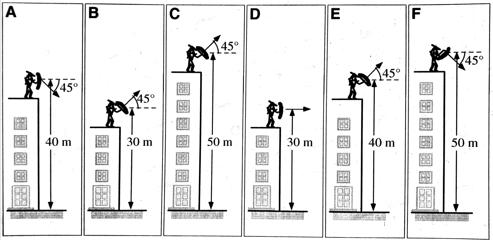] **Rank these arrows on the basis of the magnitude of their velocites just before they hit the ground below from greatest to least.** --- class:schodack ##2020.11.23 AP Physics 1. Do Now 2. Sign into (Canvas)[https://schodack.instructure.com/] 3. Navigate to Modules & Open and Complete each assignment/task **HW:** - 🥅 Stay Healthy 😷! --- ####Do Now An airplane is flying 1200 m above the ground at a speed of 200 m/s. It drops a practice bomb that hits the ground after traveling a horizontal distance of 3130 m. .center[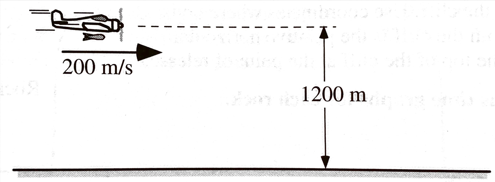] **For each of the changes below, use the choices (1) - (5) to identify what will happen to the horizontal distance the bomb travels while falling compared to the situation above.** Explain your reasoning for each situation. .right-column[1. The horizontal distance will be ***greater than*** 3130. 1. The horizontal distance will be ***less than*** 3130. 1. The horizontal distance will be ***equal*** 3130. 1. The horizontal distance will be ***zero***. 1. We ***cannot determine*** how this change will affect the horizontal distance.] .left-column[- **The plane's speed is tripled.** - **The plane is climbing straight up at the release point.** - **The plane is flying in level flight at an altitude of 1,100 m.** - **The mass of the bomb is increased.** - **The bomb is thrown from the plane with a vertical downward velocity of 15 m/s.**] --- class: thanksgiving ##2020.11.19 AP Physics .qotd[❓ of the 📆: What's your hottest 🔥 of hot takes?] 1. Do Now 2. Workday: - AP Workbook 1.M - AP Workbook 1.N - AP Workbook 1.O 3. Start Working on Projectile Problems listed in video assignment --- class: schodack ##Do Now (on a whiteboard): .right-column[<img src="images/Projectdonow page 1.jpg" width = "350"/> <img src="images/Projectdonow page 2.jpg" width = "500"/>] .left-column[Two students throw rocks horizontally from a cliff with different velocities. Both rocks hit the water at the same time, but Rock B hits further from the base of the cliff. Use coordinates where up is the positive direction and away from the cliff is the positive direction, and the origin is at the top of the cliff at the point of release. **Sketch the velocity vs. time graphs for each rock.**] --- class: thanksgiving ##2020.11.12 AP Physics .qotd[❓ of the 📆: What's your favorite food combination?] 1. ✔️ Do Now 2. 🏁 Finish Horizontal Projectile Lab - Reminder, stay socially distant as much as possible while conducting lab and group work 3. ↗️ Pivot: 2D Constant Velocity Vector Components - You will need a "mini-lesson" from me with this, so call me over when you get stuck HW: - 👀 Watch Video Lesson: Vectors and Vector Components - 📝 AP Workbook 1.M, 1.N, 1.O - 🎥 Video/Screenshot of you solving a projectile motion problem (Due Monday 11/23) → Will be scored as a quiz --- class: thanksgiving ##2020.11.12 AP Physics .qotd[❓ of the 📆: What's your favorite food combination?] 1. 🍽️ Buffet Quiz - When done you can work on the AP Progress Checks 2. 🎯 Horizontal Projectile Lab HW: ✔️ Start AP Progress Check Questions (AP Classroom) (Due 11/16) --- class: thanksgiving ##2020.11.09 AP Physics .qotd[❓ of the 📆: You can have an unlimited supply of one thing for the rest of your life, what is it? Sushi? Scotch Tape? Me: 🌯] 1. ⌚ Do Now - 2.3 Projectile Motion Ranking Task (p. 57 in Porter Workbook) 2. 🥼 Horizontal Projectile Lab HW: 1. ✔️ Start AP Progress Check Questions (AP Classroom) (Due 11/16) 2. ✔️ 2.2 Horizontally Fired Projectiles 3. ✔️ Study for Quiz on Thursday - Buffet Quiz: Choose the standards that you want to reassess - Everyone will do another KIN 2 - Solving Word Problems --- #Lab - Horizontal Projectile Develop a procedure to determine the horizontal "launch velocity" of your ramp to predict where the ball will land when launched off of the laptop cart. --- class: thanksgiving ##2020.11.05 AP Physics .qotd[❓ of the 📆: What is the best board game 🎲♟️?] 1. Do Now: - Finish Reaction time calculations - The speed limit on MH Road is 40 mph (~18 m/s). Determine how much further you travel reacting while texting vs. reacting while driving attentatively. - How big of a distance is this? Relate this to another object or situation that is of similar size. 2. Demo Prediction and Pivot Results - Pull up "Freefall Five" and "Three Views of a Projectile" 3. In Person Lab - Predicting Horizontal Projectiles **HW:** - Vectors video - Start AP Classroom Unit 1 Progress Check MC and FRQs (Due 11/16) --- class: thanksgiving ##On a whiteboard: - What patterns do you notice about the two labs? Compare to a neighbor -- - Develop an explanation for these patterns? How and why are these two labs similar? -- - With that knowledge lets predict a new situation: -- - Launcher: Which ball will hit first? What are the possibilities and the ramifications for each possibility (i.e. what physics does that tell us? Does it support our earlier patterns or conflict with our earlier patterns?) -- - Rolling Cart: What will happen when I launch the ball vertically in the moving cart? --- class: thanksgiving ##2020.11.02 AP Physics .qotd[❓ of the 📆: What’s your favorite sandwich 🥪 and why?] 1. Quiz 2. Mini-Lab: - Using just a ruler/meterstick, determine you reaction time. - Solve on your whiteboard - Measure your reaction time while attentive and while texting 3. AP Workbook 1.J, 1.K, 1.L **HW:** - Finish AP Workbook 1.J, 1.K, 1.L - Pivot: Three Views of a Projectile --- class: halloween ##2020.10.28 AP Physics .qotd[❓ of the 📆: True or False? The only way to eat a kit kat is to break it part and eat one section at a time.] 1. ⛰️ Lab Challenge 2. 🍂 Free fall Five Results 3. 🎳 Finish Rolling Ball Ranking Question **HW** - Quiz - Solving Kinematic Word Problems (Kin 2.) - AP Classroom Videos - 2.1 Porter Packet - Freefall problems --- class: halloween ## How far apart do the photogates need to be to for them to measure a time of 0.12 seconds? .center[<img src="images/ramppractical.png" width = "800 px"/>] ####Derive an equation for `\(\Delta x_2\)` in terms of `\(a\)`, `\(\Delta x_1\)`, and `\(t\)` --- class: halloween ##📝 Notes: ####Write yourself some notes describing the problem-solving process for this --- class: halloween ##🔌 Extensions ####In your notebook answer the following questions -- - You (hypothetically) repeat this experiment on a a steeper ramp. Will your `\(\Delta x_2\)` increase, decrease, or remain the same to keep the same `\(\Delta t \)`? Justify your answer by citing our derived equation. -- - A peer in you class claims that shortening the distance between the two photogates by moving photogate 1 down the ramp towards photogate 2 (while keeping photogate two stationary) will decrease the time that it takes to move through the photogates. Justify this with **two** reasons from our derivation. --- class: schodack ##2020.10.26 AP Physics: .qotd[❓ of the 📆: What was your favorite halloween costume?] 1. 🤔 Quiz 2. 🧻 1.11.2 Ranking Task: Constant Velocity vs. Constant Acceleration **HW:** 🔲 Watch Video (Posted by Noon Tomorrow) & Complete Porter Workbook 1.10 Problem Solving with Equations 🔲 Free-fall Five Pivot --- class: schodack ##2020.10.26 AP Phsyics: .qotd[❓ of the 📆: Hanging out by a camp fire, bonfire, or fireplace?] .agenda[ 1. Derive equations 2. Work with equations 3. Problem solve HW: Freefall Five Lab ] .goals[ 🎯 Kin 2. I can make predictions about the of a system based on the fact that acceleration is equal to the change in velocity per unit time, and velocity is equal to the change in position per unit time. 🎯 Kin 3. I can create mathematical models and analyze graphical relationships for acceleration, velocity, and position of the center of mass of a system and use them to calculate properties of motion of the center of mass of a system. ] --- class:schodack ##2020.10.22 AP Physics .qotd[❓ of the 📆: Hanging out by a camp fire, bonfire, or fireplace?] 1. 🤔 Quiz Comments 2. 💡 Working through 1.9: - Quick Porter Review of the Problem-solving process - Assign Problems - Work through problems & check with your buddy/buddies - Check with Mr. P or Mr. D - Rehearse soluion with Partner(s) - Post solution video to Flipgrid - Work through the rest of the problems --- class:schodack ##2020.10.19 AP Physics .qotd[❓ of the 📆: If you had to delete all but 3 apps from your smartphone, which ones would you keep?] 1. 🤔 Quiz 2. 💡 Working through 1.9 - Porter Summary - Working as a trio in Jamboard 3. ⏲️ [If Time Allows] Go Over Workbook 1.C --- class:schodack ##2020.10.19 AP Physics .qotd[❓ of the 📆: If you had to delete all but 3 apps from your smartphone, which ones would you keep?] 1. 🤔 Quiz 2. 🙈 Blind Dates w/ Porter workbook 1.9 - Solve the problem on your side of the board - You can discuss the solution with your blind date, but you cannot look at their solution - Spin board an compare answers - Rotate (on Porter's command) to a new partner 3. ⏲️ [If Time Allows] Go Over Workbook 1.C **HW**: ☑️ Video + Porter workbook 1.10 Problem-Solving with Equations --- class:schodack ##2020.10.15 AP Physics - Do Now: Graphs of a velocity versus time during 4 seconds for six identical objects are shown below. THe objects move along a straight, horizontal surface. .center[<img src = "images/Vtrannkingdonow.jpg" width="600"/>] 1. Rank these situations on the basis of displacement of the objects during these intervals. 2. Rank these situations on the basis of average velocity of the objects during each of these intervals. 3. Look over the feedback from me on 1.6-1.8 --- class:schodack ##2020.10.15 AP Physics .qotd[❓ of the 📆:Vacation on the beach 🏖️ or adventure in the mountains ⛰️?] 1. Do Now 2. AP Workbook 1.C - Go Over 3. [⏰ 15 min] Motion Card Sort - Upload a photo of your sort to Jamboard and annotate your sorting method 4. Whiteboard + Go Over Porter Workbook 1.7 Stacks of Graphs 5. Whiteboard + Go Over Porter Workbook 1.8 VT Graphs HW: - AP Workbook 1.I The Chase, Porter workbook 1.9 #2 & 3 - Quiz on: - KIN 1. I can express the motion of an object or system using narrative, mathematical, and graphical representations. - KIN 3. I can create mathematical models and analyze graphical relationships for acceleration, velocity, and position of the center of mass of a system and use them to calculate properties of motion of the center of mass of a system. --- class:schodack #2020.10.05 AP Physics - Do Now A student is shown the velocity-time graphs for two objects and is asked to decide which object is moving faster. The student responds: .center[<img src="images/VTdonow.jpg" width = "300 px"/>] *"B is faster because it has a steeper slope."* **What, if anything, is wrong with the student's statement? If something is wrong, explain the error an how to correct it. If the statment is correct, explain why.** ------------------------------------------ .qotd[❓📆: Do you have any weird/unique routines or superstitions? (For example: I have to put on my left sock before my right sock, and the same for shoes, left on first.)] --- class:schodack #2020.10.05 AP Physics .qotd[❓📆: Do you have any weird/unique routines or superstitions? (For example: I have to put on my left sock before my right sock, and the same for shoes, left on first.)] 1. Do Now ✔️ 2. Finish Carts + Ramps Discussion 3. Dry Ice Puck Summary 4. Notes 5. 1.8 Velocity vs. Time Graphs Note: scanned quizzes will be returned via email today. HW: 1.7 + 1.8 --- ###Carts + Ramps .center[<img src="images/Cartsrampschart.jpg" width = "1000"/>] --- class: schodack ##Dry Ice Puck - Determining Acceleration Experimentally 1. Whiteboard your results -- sketch each of the 3 graphs you made - Position vs. Time - Linearized Position graph - Velocity vs. Time Graph 2. Provide the mathematical model that goes with each graph (equation) 3. Be prepared (i.e. discuss with someone near you) to discuss: - Meaning of slope for linear graphs - Meaning of intercept for linear graphs --- class: center, middle #[Notes](https://mrporterphysics.github.io/Presentations/APCAPM/talks/APCAPM2020.html#1) --- class:schodack #2020.10.01 AP Physics **Do Now** ✔️ Finish checking Carts + Ramps with card sort graphs ✔️ Fill out the chart at the end of the situations (page 23) ✔️ Put your assigned problem on a vertical whiteboard with your partner (predicted vs. actual graphs and answers to the chart) .qotd[QotD: Celebrity Crush?] --- class:schodack #2020.10.01 1. Do Now (finish lab) 2. Board Meeting - Carts + Ramps 3. Board Meeting - Dry Ice Pivot 4. Motion Definitions + Notes --- class: schodack # Carts + Ramps 1. Describe the position vs. time graph slope and how it compares to the velocity values 2. Describe your velocity vs. time graph's slope and how it compares to the position vs. time graph 3. For the groups that collected the "acceleration" data...how does the acceleration compare to the other two graphs? How are the related? --- #HW: - Workbook (submit photos on classroom) - 1.C Average vs. Instantaneous Velocity - 1.G Graphs of Velocity - 1.H Relationships between Position, Velocity, and Acceleration --- class: schodack #2020.09.28 AP Physics .qotd[QotD: What is your most used emoji? 🤷♂️ 🤦♂️] 1. Quiz 2. Finish Carts + Ramps (check your card sort with the cart and ramp) - Organize Cards based on verbal description - Compare and contrast to with your partner. Make sure you discuss **each** situation until you agree and then copy the two graphs into your packet - Draw the motion map for each situation (skip the part where it has the weird word "acceleration vector") - Ignore the 3rd graph (for now...) - Use your cart and Graphical Analysis to set up each situation and compare your prediction - Fill in the table 2. Carts + Ramps Discussion HW: Pivot - Dry Ice Puck --- class:schodack #2020.09.24 AP Physics: .qotd[QotD: What weird quirks did you pick up from your parents?] 1. Do Now: Finish Walk the Graph Lab 2. Whiteboard you assigned walk the graph question to explain to the clas 3. Carts and Ramps (1.5) - Organize Cards based on verbal description - Compare and contrast to with your partner. Make sure you discuss **each** situation until you agree and then copy the two graphs into your packet - Draw the motion map for each situation (skip the part where it has the weird word "acceleration vector") - Ignore the 3rd graph (for now...) - Use your cart and Graphical Analysis to set up each situation and compare your prediction - Fill in the table --- class:schodack #2020.09.25 AP Physics: **Homework**: - Pivot: Rolling Ball Challenge 3 (Pick the trial that corresponds to the month you were born in) - Quiz on Monday: Multiple Representations: - *Kin 1. I can express the motion of an object or system using narrative, mathematical, and graphical representations. * - I will post solution videos (tomorrow 3rd block) on the previous Porter + AP Workbook materials - I will also post a practice quiz that is *optional* for you to complete --- #2020.09.21 AP Physics - Do Now: *In your notebook...* write down an real-life example of motion where - an objects position, distance, and displacement after a period of time are all ***the same*** - an objects position, distance, and displacement after a period of time are all ***different*** On Google Classroom (in the stream) use the link to install Graphical Analysis on your Chromebooks --- class:schodack #2020.09.21 AP Physics .qotd[QotD: What did you most recently purchase?] 1. Do Now 2. Go Over Pivot HW 3. CER 4. Walk the graph lab HW: - Porter Workbook 1.3, 1.4 (There will be a video posted that accompanies 1.4 and workbook 1.F) - AP Workbook 1.D, 1.F --- class:schodack #Lab: 1. Sketch you `\(x\)` vs. `\(t\)` graph from your lab on your whiteboard 2. Write the equation for the you specific model. Be sure to include units on any constants (slope and intercept) 3. Write your claim to Ava's hypothesis --- class:schodack #Ball Rolling Left - Ava's Hypothesis: <br> **Scientific Argument with Claim-Evidence-Reasoning format in physics**: **Claim:** Answer to the question -- **Evidence:** Features of the graph or measurements that support your claim -- **Reasoning:** Explain how the evidence supports your claim --- class:schodack HW: - Porter Workbook 1.3, 1.4 (There will be a video posted that accompanies 1.4 and workbook 1.F) - AP Workbook 1.D, 1.F --- ##2020.09.17 AP Physics - Do Now: --- class:schodack #2020.09.17 AP Physics .qotd[QotD: What place to visit is at the top of your bucket list?] 1. Do Now 2. Ball Rolling Right Pivot 3. Ball Rolling Left Pivot --- class: schodack #Ball Rolling Right 1. Open Assignment 2. Read through your answers to Part 3 + 4 3. Be prepared to discuss and ask questions! --- class: schodack #Ball Rolling Right - What do you notice is similar about all of the graphs? - What do you notice is different about the graphs? - What conclusions can we make about the motion of the bowling ball from our graphical models of motion? --- class:schodack #Ball Rolling Right - What does it all mean? -- - What does the slope represent? - For every statement: "The < **quantity on vertical axis** > goes up < **slope value with vertical units** > for every 1 < **horizontal unit** > of < **quantity on horizontal axis** >." -- - What does the intercept mean? --- class:schodack, center, middle #The Models... --- class:schodack #The Models... Math: $$y = mx + b$$ -- Specific Model: $$position = (75\textrm{ cm/s})time + 23 \textrm{ cm}$$ -- Generic Model: $$x = \bar{v}t + x_0$$ -- Average Velocity: $$\bar{v} = \frac{\Delta x}{\Delta t}$$ --- class:schodack, center, middle #What can we do with a model? --- class:schodack, center, middle #Make Predictions! --- #Predicting with Models - Why isn't your predicted time exactly the same as the actual time? If you think you might have made measurement mistakes, what specifically were they, and how would those mistakes affect the model? -- - Does having a non-zero percent different mean the model was wrong? Is the model still useful, even if its predictions are off a little bit? Explain. -- - Why might you need a better model of the ball than what you came up with? Think of a "real world" example where it would be important to have a more accurate model of a moving object. (When does this model for motion become limited?) --- class:schodack #Ball Rolling Left Like in Level 1, you will be plotting position vs. time for the bowling ball and generating an equation for the motion. How will the graph and equation be similar to those you found in Level 1? How will they be different? What do you see in the video that makes you think that? Explain. --- class:schodack #Ball Rolling Left Notes: - Use same video trial as last time - It was too quiet in here last time...talk to your neighbors when you have questions! --- class:schodack #Ball Rolling Left - How do the slope and intercept vary here? --- class:schodack #Velocity - is a ***vector*** quantity -- means it has two properties: size and direction - Size: how great or little the rate of position changing with time - Direction: the direction that the object is moving --- class:schodack #Ball Rolling Left - Ava's Hypothesis: <br> ##Scientific Argument with Claim-Evidence-Reasoning format in physics: **Claim:** Answer to the question -- **Evidence:** Features of the graph or measurements that support your claim -- **Reasoning:** Explain how the evidence supports your claim --- #Homework: ☑️ AP Workbook 1.A, 1.B (Submit Photos of work on classroom for feedback) ☑️ AP Daily Video - Reference Frames (Watch and take notes) ☑️ [Multiple Representation Tutorial](https://www.notion.so/Multiple-Representation-Tutorial-b64d50d01c474ca8905381e8b20a16dc) (Read, take notes, complete attached practice) **I will link all of this to a classroom assignment with directions too! --- class:schodack #Welcome! .qotd[Question of the Day: Sweet or savory for breakfast?] 1. Fill out questionnaire 1. Question of the Day 2. Polar Bears 🐻❄️ around an ice hole 🧊🕳️ 2. Survival Island Share Out 2. About AP Physics Class 3. Tech Tools: - Pivot Interactives - Slack 4. What can you measure about Zeke? --- #Quick Questionnaire Go to: https://forms.gle/zjAjMq8iPbjqw7MQA or... .center[<img src="images/firstdayQR.png" width = "350px"/>] --- class:center, middle #Question of the Day: Sweet or savory for breakfast?] --- class:photoback background-image: url("https://media.giphy.com/media/Jrpy4EB3uqVx8RpRKK/giphy.gif") The game is in the name of the game - polar bears around an ice hole - invented in the days of Ghengis Khan. A clue for you to keep you true -- like petals around a rose, you can count each bear's nose. How many polar bears do you see? [Dice Roller](https://www.random.org/dice/) --- class: schodack, center, middle #Why? What connections to physics class? --- class:schodack #Why? - You may feel frustrated as you try to figure physics out. That’s okay. -- - Physics is hard to understand until you know the “rules of the game.” -- - But, once you discover the rules, physics often seems easy and you may be surprised that others don’t understand. -- - However, remember that you didn’t always understand. -- - When you discover the rules and understand without someone just telling you the “answer”, you are excited. -- - The journey to understanding is very important. So, no one is going to tell you the answer, but we’re all here to support each other on our journeys. -- - Being told the “answer” at most gives you one answer that you didn’t know. Learning to think critically and arrive at the answer with support develops a skill that you will use to find many answers. --- class:schodack #Inquiry - make careful observations -- - gather lots of data (many roles of the dice) -- - look for patterns, compare and contrast, look for extremes -- - simply the problem being investigated (roll fewer dice) -- - constrain the variables (set dice to specific values) -- - propose a hypothesis, test it, modify it based on results, repeat --- #Survival Island 🏝️ You and your group are stranded on an deserted island 😮! -- Using *each* of your <u>unique skill's</u> develop a plan to escape the island. -- Whiteboard your response (one person) - please wash your hands, or use hand sanitizer before and after using the markers - also remain at your tables physically distant from your group members. -- Be prepared to share out your plan to escape the island as a group. Each of you should offer a part of the plan to the class. --- class:schodack #2020.09.14 AP Physics .qotd[QotD: What is one weird/interesting fact about yourself?] 1. Do Now: In your notebook (or a scrap piece of paper if you don't have one) answer the following prompts: - *What is a scientific model?* - *How do you make a scientific model?* - *How do you describe and quantify motion?* 2. How to learn 3. Zeke 4. Tech Tools 5. Rolling Ball Lab HW: - Read Syllabus - Ball Rolling Left Pivot Assignment - Wednesday Check in (will remind you on classroom) - AP Daily Video --- class: schodack #Your Questions: - Will I fall behind? Will you help me if I fall behind? How will you help me? - How was your wedding? - Pop Quizzes? - Anyone is capable of doing this class, people will learn at different paces - No Quantum in AP Physics :( - What is physics? - Most important topic this year? - How will labs work? --- class: schodack #Learning happens in two phases: information transfer and sense-making .left-column[ ##Information Transfer .center[<img src="icons/notebook-bookmark-svgrepo-com.svg" width = "200 px"/>]] .right-column[ ##Sense-Making .center[<img src="icons/thinking-svgrepo-com.svg" width = "200 px"/>]] ??? Note back to the polar bears around an ice hole: - I was providing information (how many polar bears) - You were doing the sense-making (but I helped when I took dice away or offered hints) --- class: schodack #Who/what is helping with information transfer? - [AP Daily Videos]("https://apclassroom.collegeboard.org/92/home") - [Flipping Physics]("https://www.flippingphysics.com/ap-physics-1.html") - [Khan Academy Videos]("https://www.khanacademy.org/science/ap-physics-1") - [OpenStax College Physics]("https://openstax.org/books/college-physics-ap-courses/pages/1-connection-for-ap-r-courses") - Mr. Porter - and more... **All resources will be vetted, selected, and curanted by Mr. Porter** --- #Who is helping with sense-making? .left-column[.center[<img src="icons/thinking-svgrepo-com.svg" width = "100 px"/>] ##What does that look like? - Coach and cheerleader - Design and implement sense-making tasks and activities - Offer feedback and encouragement - Answer questions - Clarify information received - Give and grade assessments to provide *more* feedback] .right-column[.center[<img src="images/HeatherNate_0230.jpg" width = "250 px"/>] Mr. Porter with his AP Physics class] --- class:schodack #What is your role? <br> .left-column[.center[<img src="icons/notebook-bookmark-svgrepo-com.svg" width = "100 px"/>] - Read and take notes over assigned readings - Watch and take notes over assigned videos - Interrogate what you’re reading or watching: “Why is this true?” - Understand that just because you’ve been exposed to the information that doesn’t mean you’ve learned it yet ] .right-column[.center[<img src="icons/thinking-svgrepo-com.svg" width = "100 px"/>] - Participate in class activities and relate them to the information from information transfer tasks - Ask lots of questions - Seek out feedback from peers and teacher - Ask lots of questions - Engage with homework meaningfully (don’t just Google for answers) - Ask lots of questions - Become comfortable with mistakes and being wrong at first ] --- class: schodack #Tech Tools: <img src="https://upload.wikimedia.org/wikipedia/commons/5/59/Google_Classroom_Logo.png" width = "150px"/> <img src="https://d34u8crftukxnk.cloudfront.net/slackpress/prod/sites/6/2019-01_BrandRefresh_slack-brand-refresh_header-1.png" width = "150px"/> <img src="https://static1.squarespace.com/static/5b563343c258b4713971bd98/t/5b5634242b6a28e23446c5a1/1597687166766/" height = "150px"/> --- #Google Classroom #Code: hfujik3 Note: you should already have an invite to the Google Classroom --- #Slack https://join.slack.com/t/mhapphysics/shared_invite/zt-h9cidfar-_hLwQFGtSt6Ox8yujIHkYA Or...join from the link on Google Classroom...that seems easier... --- #AP Classroom #https://myap.collegeboard.org/ #CODE: AYZEGW --- #Pivot Interactives https://www.pivotinteractives.com/ 1. Click Join a class 2. Use the class key: d8ff7b1d (or join from Google Classroom) 3. Open First Assignment (ball rolling left) --- class:photoback background-image: url("images/Zeke") #I changed my mind on the lab we were going to do...but here is my dog Zeke anyways. --- class:center, middle, schodack #What do you see, think, and wonder? --- class:center, middle, schodack #How can we predict the time that the ball would be at the flag? --- class:center, middle, schodack #Pivot Tools + Practice Measurements --- class:center, middle, schodack #Video Assignments --- class:center, middle, schodack #What data should we collect and how should we do it? --- class:center, middle, schodack #Board Meeting --- class:center, middle, schodack #Predictions --- class:schodack #Exit Ticket On google classroom answer: What did we model today? How did we model it? What is the model for? --- class: schodack #Homework/Wednesday Class 1. Pivot Assignment: Ball Rolling Left 1. Read Syllabus 1. Wednesday Check in: - Answer the posted question of the day in slack by 8 am on Wednesday (I will post the question Tuesday evening) - Note office hours are available if you have questions on Pivot (link on classroom for sign up) 2. AP Daily Video on Motion